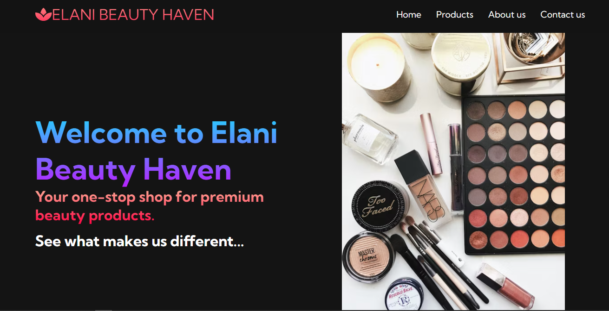

Web Developer | Student
Download ResumeHello! I'm Tonybrin Ochieng, a passionate and creative web developer currently pursuing my degree in Information Technology. I specialize in front-end development and love building clean, user-friendly, and responsive websites.
Over the past few years, I’ve developed a solid foundation in HTML, CSS and JavaScript. I enjoy turning complex problems into simple, elegant designs and clean code.
My journey into coding started with curiosity and a desire to build something from nothing. Since then, I've built various projects ranging from personal blogs to fully responsive web applications. I'm constantly learning and staying updated with the latest web technologies.
In addition to coding, I enjoy design doing research on the latest Technology trends. I believe in the power of collaboration, continuous improvement, and lifelong learning.
Currently, I’m looking for internship or freelance opportunities where I can contribute, grow my skills, and work on exciting web projects with passionate people.
When I’m not at the computer, I’m probably gaming (Call of Duty Mobile is my go-to!), reading up on new tech trends, or enjoying some photography.
I build responsive and modern websites using HTML, CSS, JavaScript, and frameworks like React. Whether it’s a landing page or a full web app, I ensure performance and user experience are top-notch.
I offer ongoing support to keep your site updated, secure, and running smoothly, including content updates and performance monitoring.
Available for freelance work on a project basis. If you have an idea, I can help bring it to life — from concept to deployment.
A simple sales website using HTML, CSS, and JavaScript.
Email: deluxetony14@gmail.com.com
Tel: 0716839871
GitHub: Tonybrian-code